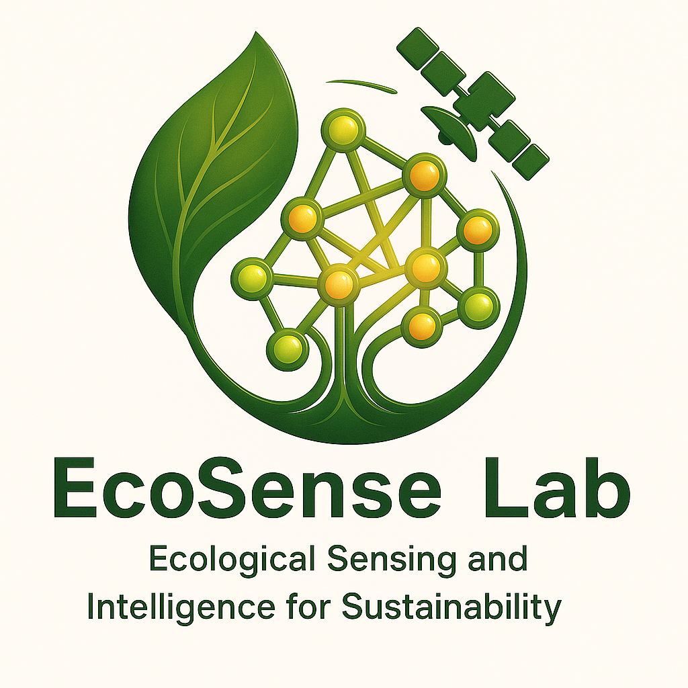

Welcome to EcoSense Lab

Eco — Ecology / Ecosystems
Sense — Sensing (remote sensing, monitoring)
+ Intelligent understanding
We are ecologists dedicated to advancing the understanding of how terrestrial ecosystems interact with climate using a variety of tools:
- Satellite remote sensing (Solar-induced chlorophyll fluorescence, Optical remote sensing, Thermal remote sensing)
- Artificial intelligence (Interoperable AI, Process-informed machine learning)
- Land surface modeling to better represent carbon and water fluxes
Our research aims to bridge fundamental ecological science with real-world applications that deliver socioeconomic benefits, including but not limited to:
- Enhancing forest management to increase carbon sequestration
- Improving crop yields and water use efficiecny to support food and water security
- Mitigating urban heat to protect public health
Principal Investigator
Dr. Liyin He
Assistant Professor of Terrestrial Ecology
A207 Levine Science Research Center
Nicholas School of the Environment
Duke University
Durham, NC 27708